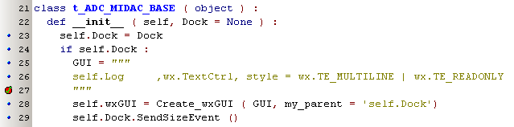
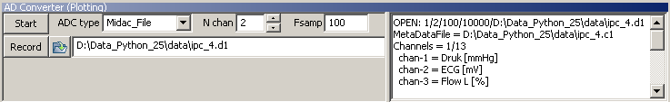

Brick ADC  (july 2009)
(july 2009)
Application Designer / Domain Expert / Control Designer / Core Developer
Introduction
This brick forms the interface to all available AD converters. Because of our lack of knowledge of Linux and the unavailability of MacOS, we were only able to test these AD converters under Windows-XP.
|
The control used in the AD Converter Brick will automatically search for all avalaible drivers. All Drivers should be placed in ../PyLab_Works/controls/ADC_Drivers/... The filename of a driver should begin with Driver_ The class name of driver should begin with t_ADC_Driver_ The class should implement the methods Set, Start_Stop, Kill, Get_New_Sample_Sets |
The GUI has all basic controls and a panel on the right, which can be used by the ADC to add some specific extra controls.
`
This panel is passed as a parameter on creation of the ADC, and here is an example how you can add a multi-line textcontrol on this extra panel. Note that because these controls are created after the complete application is settled, there will be no implicit size event, until you resize for instance the whole application window, therefor we here send an explicit size event.

And here is the result:

Set
Start_Stop
Kill
Get_New_Sample_Sets
This method is called every cycle of the virtual machine. The method should return None if no new data is available and data (possible with metadata) if the data has changed. A typical return of this method might look like this:
USB-6008 / USB-6009
The USB-6008 and USB-6009 are (relative) cheap ( Euro 160 / 260 ) AD-converters from National Instruments. Theer are drivers available for many different Operating systems and a lot of data-acquisition packages support these devices.
for the rest equal to USB-6009
Drivers installation under Windows:
From our experiences it's important to follow the next steps exactly, otherwise you will be meshed up with a lot of active programs and services, which only consume cpu time and memory space.
|
Lookout Citadel Server |
||
|
National Instruments Domain Service |
NOT NEEDED |
|
|
National Instruments PSP Server Locator |
||
|
National Instruments Time Synchronization |
||
|
NI Configuration Manager |
NEEDED |
|
|
NI Service Locator |
||
|
nidevldu |
||
|
NILM License Manager |
||
|
nipxirmu |
Alle services die niet nodig zijn kunnen worden gestopt en het opstart-type kan worden ingesteld op "Uitgeschakeld". Dit vereist beheerdersrechten op de PC.
MIDAC-ADC
Only Midac_File and FysioFlex are exposed.